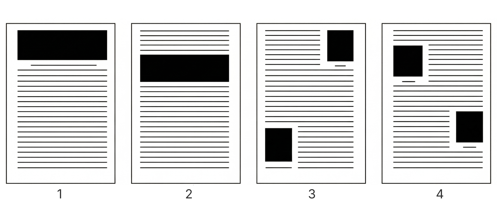

Картинки
В этой сатье мы рассмотрим несколько основных способов размещения иллюстраций в книге относительно текстового блока, а также обратим внимание на то, как пара трюков может сделать макет более чистым и ровным.
Положение в макете

←
1
Открыто (рис. 44, а)
Иллюстрация располагается сверху или снизу текстового блока. Это делает её визуально отделённой от текста и более заметной.
Закрыто (рис. 44, б)
Иллюстрация находится между частями текста. Это позволяет разместить её максимально близко к соответствующему тексту.
В оборку (рис. 44, в-д)
Иллюстрация находится между частями текста. Это позволяет разместить её максимально близко к соответствующему тексту.
- Открытая оборка (рис. 44, в) — иллюстрация находится в углу страницы и окружена текстом с двух сторон.
- Закрытая оборка (рис. 44, г) — текст обрамляет иллюстрацию с трёх сторон.
- Глухая оборка (рис. 44, д) — текст окружает иллюстрацию со всех четырёх сторон.
←
2
На полях (рис. 44, е)
Тоже подходит для миниатюрных изображений. Такое расположение связано с дополнительным расходом бумаги, так как требует увеличения ширины полей.
На полосе или развороте (рис. 44, ж)
Этот метод создаёт эффект погружения, но требует точной настройки при печати, чтобы важные детали изображения не оказались в зоне обреза или на корешковом сгибе.
Подписи
Выравнивание
Если изображение находится около текста, то верхнюю границу стоит равнять по базовой линии шрифта или x-heigh шрифта (об этих линиях мы говорили в главе Шрифт). Пример: начинается абзац, а нам нужно поставить фотку. Ставим ее по базовой линии первой строки, не по высоте прописной. Когда под обрез – разрываем мир книги важные элементы изображения не подводить к краям книги + не ставить на корешковый сгиб